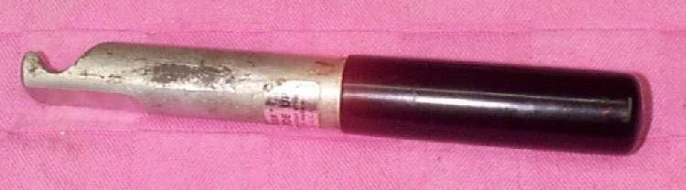
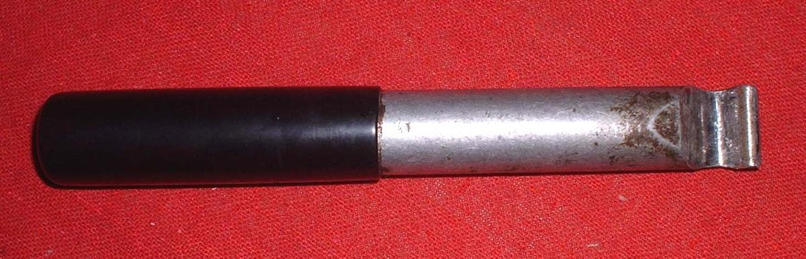
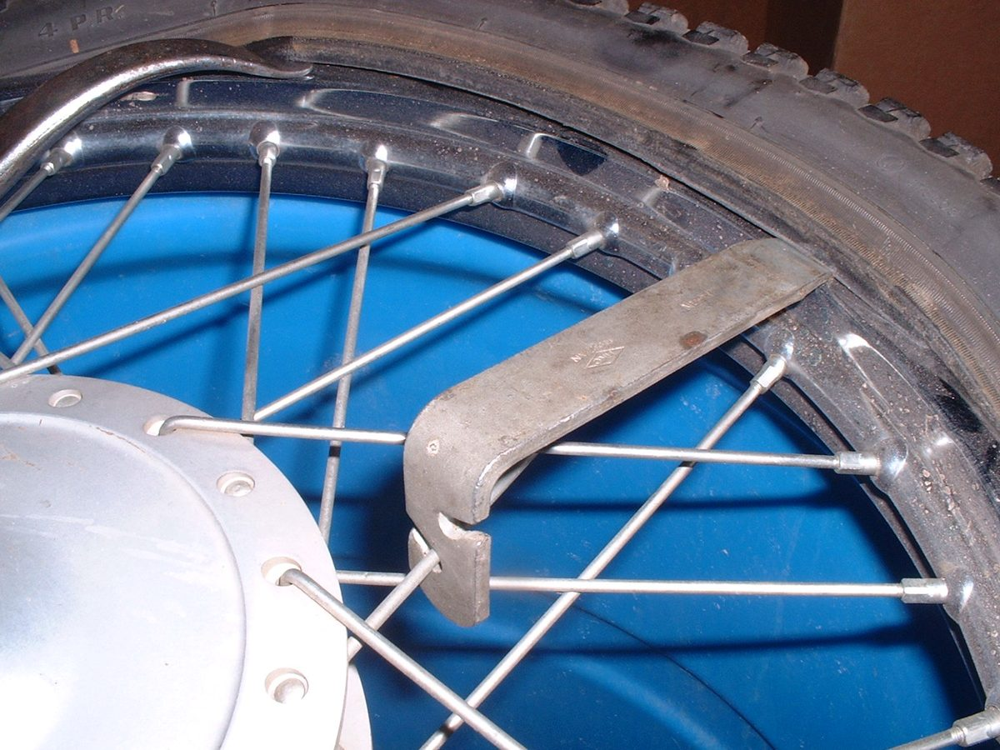

A tube is most often pinched while the second bead of the tyre is levered onto the rim. A thick, rounded lever with a smooth nose takes small bites of bead and pinches the tube less than a sharp steel iron. This page shows how to make one from round bar. It is not meant to replace a good set of levers; it is an extra tool for the last bead.
Safety
- Wear eye protection when cutting, filing or grinding.
- Round every edge. A sharp edge cuts the tube and scratches the rim.
- Never add a pipe to the end of the lever for extra force. It can break the tool and hit you.
You need
- A piece of round aluminium bar, about 25 mm thick and 200 to 230 mm long.
- A file or bench grinder, a hacksaw and a vice.
- Fine abrasive paper to finish smooth.
Steps
- Cut the bar to length and square the ends.
- Shape one end into a smooth, curved nose that can slide under the bead. File a shallow curve on the underside so the nose rides over the rim edge without catching.
- Shape the other end into a rounded handle so it fits the hand.
- Remove all burrs and sand every surface smooth.
- Check on a spare rim: the nose should sit on the rim edge and push the bead over with little effort.
Using it
- Fit the tube with a little air in it so it holds its shape. Put the first bead on and push the bead on the far side into the deep centre of the rim.
- Lubricate the bead with soapy water or tyre lubricant.
- Lever a small bite of bead over the rim. Move the lever about 25 mm and take the next bite. Keep pushing the opposite bead down into the centre of the rim.
- If the bead will not go, take a smaller bite. Do not use more force.
Check your work
- The finished lever has no sharp edge you can catch with a thumbnail.
- The tube is not pinched when the tyre is fitted. Check by looking round both sides before you inflate.
If it did not fix the problem
- A tube that goes flat soon after fitting: New tube goes flat soon after fitting a tyre.
- See Repair a puncture in an inner tube.